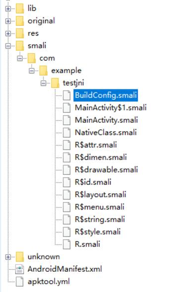
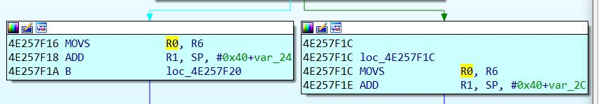

Android破解
因为一些需要，最近在搞这方面的东西，也分享一下自己在破解过程中的一些过程，下面一一个验证作为例子。
例子效果
其实就是一个简单的输入账号密码的验证，也不是账号密码，就是根据第一条输入进行加密，得到的结果与第二条对比，然后做出比较。
例子的关键代码我会在文章底部贴出。
Smali层破解
首先，按常规的话呢，我们是需要进行反编译的（这个例子没加一些乱七八糟的东西）。拖进反编译工具看一下：

可以看到基本没有什么，比较受关注的就是三个文件：NativeClass、MainActivity和他的内部类。这三个文件是我们要进行破解的关键要素，首先我们可以看到程序输入错误的时候会设置标题为fail。
所以这个字符串是我们破解的第一个关键点，所以我们搜索关键字fail，会得到下面的一处地方：
只有一处，所以我们就大胆的跟进去就好了。
1
2
3
4
5
6
7
8
9
| .line 36
:cond_0
iget-object v0, p0, Lcom/example/testjni/MainActivity$1;->this$0:Lcom/example/testjni/MainActivity;
const-string v1, "fail"
invoke-virtual {v0, v1}, Lcom/example/testjni/MainActivity;->setTitle(Ljava/lang/CharSequence;)V
goto :goto_0
|
可以分析到，我们这就是一个条件的落脚点，也就是说我们很有可能是在一个if的分支上，所以我们找他是从那个地方跳转过来的。
可以看到是根据上面一个静态函数的返回值来确定我们是要跳去哪个地方，所以我们在看一下access$2这个方法，这个方法是内部类调用外部成员的时候所自动命名的。
可以看到他的返回值其实也就是Checkpass这个方法的返回值，所以我们的关键是看一下这个方法：
1
2
3
4
5
6
7
8
9
10
11
12
13
14
15
16
17
18
19
20
21
22
23
24
25
26
27
28
29
30
31
32
33
34
35
36
37
38
39
40
41
42
43
44
45
46
47
48
49
50
51
52
53
54
55
56
57
58
59
60
61
62
63
64
65
66
| .method private static Checkpass(Ljava/lang/String;Ljava/lang/String;)Z
.locals 7
.param p0, "username"
.param p1, "password"
.prologue
.line 44
const/4 v2, 0x0
.line 45
.local v2, "flag":Z
new-instance v3, Ljava/lang/StringBuffer;
invoke-direct {v3}, Ljava/lang/StringBuffer;-><init>()V
.line 46
.local v3, "sb":Ljava/lang/StringBuffer;
invoke-virtual {p0}, Ljava/lang/String;->toCharArray()[C
move-result-object v1
.line 47
.local v1, "cs":[C
array-length v5, v1
const/4 v4, 0x0
:goto_0
if-lt v4, v5, :cond_1
.line 51
invoke-virtual {v3}, Ljava/lang/StringBuffer;->toString()Ljava/lang/String;
move-result-object v4
invoke-virtual {p1, v4}, Ljava/lang/String;->equalsIgnoreCase(Ljava/lang/String;)Z
move-result v4
if-eqz v4, :cond_0
.line 52
const/4 v2, 0x1
.line 53
:cond_0
return v2
.line 47
:cond_1
aget-char v0, v1, v4
.line 48
.local v0, "c":C
add-int/lit8 v6, v0, 0x1
int-to-char v0, v6
.line 49
invoke-virtual {v3, v0}, Ljava/lang/StringBuffer;->append(C)Ljava/lang/StringBuffer;
.line 47
add-int/lit8 v4, v4, 0x1
goto :goto_0
.end method
|
方法有点长，其实自己跟一下也就能发现，其实这个检查密码的方法在跳出的时候是要进行一个v2寄存器值的设置的：
1
2
3
| .line 53
:cond_0
return v2
|
所以我们跟踪是谁跳到了cond_0这个地方的：
if-eqz v4, :cond_0这个地方是唯一一处跳过来的代码，但是仔细会发现，这个离得十分的近，而且明显就是上句下句的关系：
1
2
3
4
5
6
7
8
| if-eqz v4, :cond_0
.line 52
const/4 v2, 0x1
.line 53
:cond_0
return v2
|
比较有意思的来了，可以看到，再调过来的时候，如果v4等于0，那么将跳过将v2设置为1（true）的一个过程，然后v2被设置的地方，只有初始化：const/4 v2, 0x0和这个0x1，所以这个是一个关键点。所以我们可以将初始化的时候将这个v2直接改为1是一种方法。
回过头来看内部类的跳转，发现其实我们只要不让内部类进行跳转的话呢，也是可以避免跳转到fail字符串地方的。
这两种方法都可以。
动态调试smali层就不分析了，其实是一样的，而且我的调试工具不出现寄存器，所以不是很方便。
错误之处
我们进行反编译和签名之后，在模拟器上进行运行，但是你会发现，居然还是出现了fail这个字样，这个是为什么呢？我们就需要回过头来再看一下，发现在我们的if语句跳转到正常之后，我们的字符串是由encodestr这个字符串进行间接传递的，也就是说我们需要关注的是encodestr这个方法，但是我们发现这个方法是本地的，也就是在smali这一层我们是无法进行修改的（其实我们可以将这个检测删掉，然后改为正常，但是这种做法只能针对极少数，因为本地方法执行的东西有可能很多，所以删除掉是不明智的）。
所以我们就需要跟踪到so层进行第二层验证的分析。
so层验证
看一下程序的so文件：
就这么一个，所以分析起来很好办
我们使用IDA进行动态的调试，包名一看就知道是哪个了，载入IDA之后我们来到我们所加载的程序层的那个so文件：

打开这个之后我们来找我们的一个关键代码，因为我们在smali层分析出是encodestr这个方法进行的一个二次验证，所以我们就要来找这个函数：
显而易见，是这个函数，虽然不是一模一样，但是基本一样，不一样的原因是因为我javah生成的一个规范问题，这个我在文章底部贴出代码的时候你们就会知道。
我们看一下大体的流程图：
虽然截取的不完全，但是关键截取到了，上面的那一个不是很关键，就是一个顺序执行，没有跳转，我们就要来分析一下这个函数的一个执行流程。
首先我们分析右半部分，发现非常的直观，是一个极其明显的for循环，判断的一局是根据R0与R5的一个值进行判断的，如果破解玩的多的话呢，可以了解到这块东西不是我们想要关注的，除非你想要制作注册机，这块是密码的加密算法，我们看完之后，来到左半部分，发现一个分支，是由我们的跳转语句BNE来决定的，这个判断是在我们的循环语句执行过后进行判断的，很有可能是我们的关键跳，我们来看一下分支的结构：

仔细看，发现有个ADD指令，分开的两个ADD指令分别调用了堆栈的指定偏移处，左边的比右边的小了八个字节，注意这八个字节，让我们来猜一下：，应该存在两个字符，这两个字符的指针存放在堆栈中，所以这两个字符指针是局部变量，而且是连着的，我们动态调试一下：
所以现在我们基本可以确定这个BNE使我们比较关键的跳转，设置BNE的反向跳转就可以了（简单改），所以下面如何进行BNE指令的修改是我们的关键要素，SO文件的修改和win32修改是有很大差别的，相对而言麻烦一些，看下面的操作：
- 首先我们跳转到我们的HEX页面，跟随我们的BNE：
两个字节应该是thumb，我们要修改为BEQ，这样子我们就可以实现反向跳转，ARM这边小端存储，也就是本机字节顺序，所以准确的说是D102，二进制是：1101000100000010，很明确的分析出8-11位为0001，我们要改为BEQ，所以要改这个1为0，所以就是1101000000000010，转为16进制就是D002，再转为小端存储，也就是02D0，分析到这里就足够了。
使用二进制编辑工具修改so（无所谓哪个）
搜索我们的关键字节（随便找一个临近的）
找到之后，将D1改为D0，最后导出
导出之后重新编译，签名。
可以看到，确实是成功了。
注意事项
在我们进行SO层调试的时候，动态调试，如果你调试的是源程序，也就是说没有过Smali层，我们是没办法进入右边分支的，只有过了Smali层的验证，才能进行so的错误验证。
所以这个东西是一步一步来的，不能一蹴而就
java层与C++层代码分析
贴上源代码层的源码：
java层（Smali层）代码：
1
2
3
4
5
6
7
8
9
10
11
12
13
14
15
16
17
18
19
20
21
22
23
24
25
26
27
28
29
30
31
32
33
34
35
36
37
38
39
40
41
42
43
44
45
46
47
| public class MainActivity extends Activity {
static
{
System.loadLibrary("TestJNI");
}
private Button Login;
private EditText username;
private EditText password;
NativeClass nc = new NativeClass();
@Override
protected void onCreate(Bundle savedInstanceState) {
super.onCreate(savedInstanceState);
setContentView(R.layout.activity_main);
Login = (Button) findViewById(R.id.soLogin);
username = (EditText) findViewById(R.id.username);
password = (EditText) findViewById(R.id.password);
Login.setOnClickListener(new OnClickListener() {
@Override
public void onClick(View v) {
if(Checkpass(username.getText().toString(),password.getText().toString()))
{
MainActivity.this.setTitle(nc.encodestr(username.getText().toString(),password.getText().toString()));
}else
{
MainActivity.this.setTitle("fail");
}
}
});
}
private static boolean Checkpass(String username,String password)
{
boolean flag = false;
StringBuffer sb = new StringBuffer();
char[] cs = username.toCharArray();
for(char c:cs){
c++;
sb.append(c);
}
if(password.equalsIgnoreCase(sb.toString()))
flag = true;
return flag;
}
}
|
C++层（so层）验证：
1
2
3
4
5
6
7
8
9
10
11
12
13
14
15
16
17
18
19
| JNIEXPORT jstring JNICALL Java_com_example_testjni_NativeClass_encodestr
(JNIEnv * env, jobject jstr, jstring username, jstring password)
{
char succcess[] = "success";
char fail[] = "fail";
char *nativeusername = Jstring2CStr(env,username);
char *nativepassword = Jstring2CStr(env,password);
for(int i = 0; i < strlen(nativeusername); i++)
{
*(nativeusername + i) += 1;
}
if(strcmp(nativeusername,nativepassword)==0)
{
return env->NewStringUTF(succcess);
}else
{
return env->NewStringUTF(fail);
}
}
|
不关键的代码我就不列举出来了，其实就是一个简单的java层和NDK的验证。
总结
之前一直玩的是Windows平台下的破解和外挂制作，Unix下的不怎么玩，这也是最近在做一些计算机组成原理分析才玩的，相对于ASM，ARM熟练程度还是不够。
这里我还想再问一下，之前论坛发帖，有谁能解决一下这个eclipse无法显示寄存的问题呢？